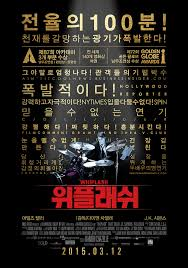

위플래쉬

2014 | 드라마 | 미국
데미언 셔젤 감독
뉴욕의 명문 셰이퍼 음악학교에서 최고의 스튜디오 밴드에 들어가게 된 신입생 앤드류. 최고의 지휘자이지만 동시에 최악의 폭군인 플레쳐교수는 폭언과 학대로 앤드류를 한계까지 몰아붙이고 또 몰아붙인다.
그리고 드럼에 대한 앤드류의 집착과 광기가 폭발한다.
영화 내내 조여드는 압박감과 긴장감은 관객으로 하여금 찌릿찌릿하게 만듭니다. 더블 타임 스윙은 영화가 끝나도 관객에게 청각적 쾌감을 안깁니다.